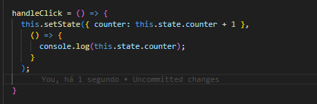
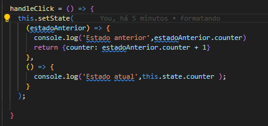

setStates em classes

Essa parte do codigo é assicrono, isso quer dizer que quando ele esta na espera, equanto o outros codigos estao sendo executado em simultaneo, ai ele começa com
um estado e é preciso usar o setState q vai sicronizar com um Callback
No exemplo acima esta sendo mostrado como funciona, this.setState esta sendo assicrono com a função q
esta sendo carregado o console.log
entao, handleClick esta passando para o react, executar a função q
esta sendo contadora e depois q ela
terminar, entao entrará o console.log
Oq esta sendo manipulado acima, nao é o DOM do navegador, na verdade é o virtual DOM é do proprio React ou seja é uma copia do DOM real, o setState ele compara os 2 DOMS e procura onde esta a diferença é assim q o react funciona.
Por essa comparação ele pega todos os elementos da pagina e compara, jogando no DOM mudado e é setado no DOM real,
Exemplo, este é o mesmo resultado acima: 